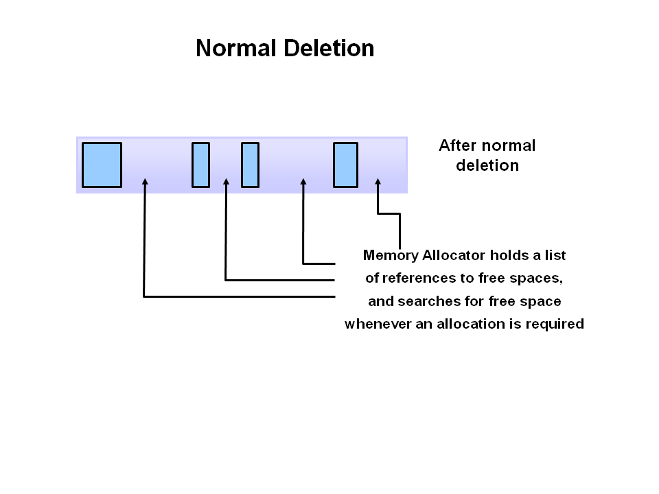
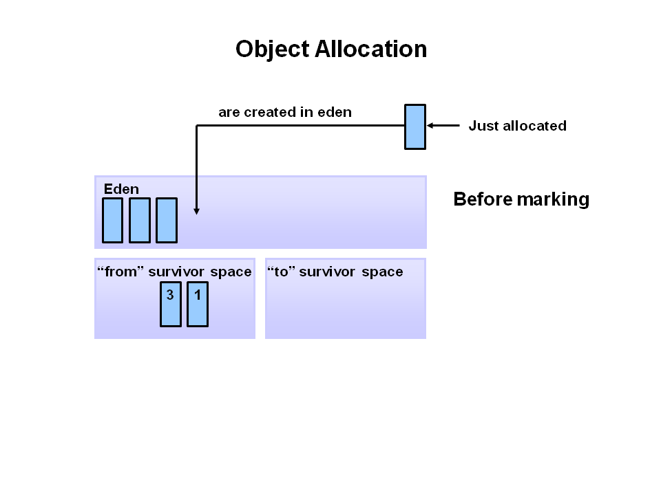

Java Garbage Collection Basics
Exploring the JVM Architecture
Hotspot Architecture
The HotSpot JVM possesses an architecture that supports a strong
foundation of features and capabilities and supports the ability to
realize high performance and massive scalability. For example, the HotSpot
JVM JIT compilers generate dynamic optimizations. In other words, they
make optimization decisions while the Java application is running and
generate high-performing native machine instructions targeted for the
underlying system architecture. In addition, through the maturing
evolution and continuous engineering of its runtime environment and
multithreaded garbage collector, the HotSpot JVM yields high scalability
on even the largest available computer systems.

The main components of the JVM include the classloader, the runtime data
areas, and the execution engine.
Key Hotspot Components
The key components of the JVM that relate to performance are highlighted
in the following image.

There are three components of the JVM that are focused on when tuning
performance. The heap is where your object data is stored. This area is
then managed by the garbage collector selected at startup. Most tuning
options relate to sizing the heap and choosing the most appropriate
garbage collector for your situation. The JIT compiler also has a big
impact on performance but rarely requires tuning with the newer versions
of the JVM.
Performance Basics
Typically, when tuning a Java application, the focus is on one of two main
goals: responsiveness or throughput. We will refer back to these concepts
as the tutorial progresses.
Responsiveness
Responsiveness refers to how quickly an application or system responds
with a requested piece of data. Examples include:
How quickly a desktop UI responds to an event
How fast a website returns a page
How fast a database query is returned
For applications that focus on respsonsiveness, large pause times are not
acceptable. The focus is on responding in short periods of time.
Throughput
Throughput focuses on maximizing the amount of work by an application in
a specific period of time. Examples of how throughput might be measured
include:
The number of transactions completed in a given time.
The number of jobs that a batch program can complete in an hour.
The number of database queries that can be completed in an hour.
High pause times are acceptable for applications that focus on throughput.
Since high throughput applications focus on benchmarks over longer periods
of time, quick response time is not a consideration.
Describing Garbage Collection
What is Automatic Garbage Collection?
Automatic garbage collection is the process of looking at heap memory,
identifying which objects are in use and which are not, and deleting the
unused objects. An in use object, or a referenced object, means that some
part of your program still maintains a pointer to that object. An unused
object, or unreferenced object, is no longer referenced by any part of
your program. So the memory used by an unreferenced object can be
reclaimed.
In a programming language like C, allocating and deallocating memory is a
manual process. In Java, process of deallocating memory is handled
automatically by the garbage collector. The basic process can be described
as follows.
Step 1: Marking
The first step in the process is called marking. This is where the
garbage collector identifies which pieces of memory are in use and which
are not.

Referenced objects are shown in blue. Unreferenced objects are shown in
gold. All objects are scanned in the marking phase to make this
determination. This can be a very time consuming process if all objects in
a system must be scanned.
Step 2: Normal Deletion
Normal deletion removes unreferenced objects leaving referenced objects
and pointers to free space.

The memory allocator holds references to blocks of free space where new
object can be allocated.
Step 2a: Deletion with Compacting
To further improve performance, in addition to deleting unreferenced
objects, you can also compact the remaining referenced objects. By moving
referenced object together, this makes new memory allocation much easier
and faster.

Why Generational Garbage Collection?
As stated earlier, having to mark and compact all the objects in a JVM is
inefficient. As more and more objects are allocated, the list of objects
grows and grows leading to longer and longer garbage collection time.
However, empirical analysis of applications has shown that most objects
are short lived.
Here is an example of such data. The Y axis shows the number of bytes
allocated and the X access shows the number of bytes allocated over time.

As you can see, fewer and fewer objects remain allocated over time. In
fact most objects have a very short life as shown by the higher values on
the left side of the graph.
JVM Generations
The information learned from the object allocation behavior can be used
to enhance the performance of the JVM. Therefore, the heap is broken up
into smaller parts or generations. The heap parts are: Young Generation,
Old or Tenured Generation, and Permanent Generation

The Young Generation is where all new objects are
allocated and aged. When the young generation fills up, this causes a
minor garbage collection. Minor collections can be optimized assuming a
high object mortality rate. A young generation full of dead objects is
collected very quickly. Some surviving objects are aged and eventually
move to the old generation.
Stop the World Event - All minor garbage collections
are "Stop the World" events. This means that all application threads are
stopped until the operation completes. Minor garbage collections are
always Stop the World events.
The Old Generation is used to store long surviving
objects. Typically, a threshold is set for young generation object and
when that age is met, the object gets moved to the old generation.
Eventually the old generation needs to be collected. This event is called
a major garbage collection.
Major garbage collection are also Stop the World events. Often a major
collection is much slower because it involves all live objects. So for
Responsive applications, major garbage collections should be minimized.
Also note, that the length of the Stop the World event for a major garbage
collection is affected by the kind of garbage collector that is used for
the old generation space.
The Permanent generation contains metadata required by
the JVM to describe the classes and methods used in the application. The
permanent generation is populated by the JVM at runtime based on classes
in use by the application. In addition, Java SE library classes and
methods may be stored here.
Classes may get collected (unloaded) if the JVM finds they are no longer
needed and space may be needed for other classes. The permanent generation
is included in a full garbage collection.
The Generational Garbage Collection Process
Now that you understand why the heap is separted into different
generations, it is time to look at how exactly these spaces interact. The
pictures that follow walks through the object allocation and aging process
in the JVM.
First, any new objects are allocated to the eden space. Both survivor
spaces start out empty.

When the eden space fills up, a minor garbage collection is triggered.

Referenced objects are moved to the first survivor space. Unreferenced
objects are deleted when the eden space is cleared.

At the next minor GC, the same thing happens for the eden space.
Unreferenced objects are deleted and referenced objects are moved to a
survivor space. However, in this case, they are moved to the second
survivor space (S1). In addition, objects from the last minor GC on the
first survivor space (S0) have their age incremented and get moved to S1.
Once all surviving objects have been moved to S1, both S0 and eden are
cleared. Notice we now have differently aged object in the survivor space.

At the next minor GC, the same process repeats. However this time the
survivor spaces switch. Referenced objects are moved to S0. Surviving
objects are aged. Eden and S1 are cleared.

This slide demonstrates promotion. After a minor GC, when aged objects
reach a certain age threshold (8 in this example) they are promoted from
young generation to old generation.

As minor GCs continue to occure objects will continue to be promoted to
the old generation space.

So that pretty much covers the entire process with the young generation.
Eventually, a major GC will be performed on the old generation which
cleans up and compacts that space. 
Java Garbage Collectors
You now know the basics of garbage collection and have observed the
garbage collector in action on a sample application. In this section, you
will learn about the garbage collectors available for Java and the command
line switches you need to select them.
Common Heap Related Switches
There are many different command line switches that can be used with
Java. This section describes some of the more commonly used switches that
are also used in this OBE.
Switch Description
-Xms Sets
the initial heap size for when the JVM starts.
-Xmx
Sets the maximum heap size.
-Xmn
Sets the size of the Young Generation.
-XX:PermSize Sets the
starting size of the Permanent Generation.
-XX:MaxPermSize Sets the maximum size of the Permanent Generation
The Serial GC
The serial collector is the default for client style machines in Java SE
5 and 6. With the serial collector, both minor and major garbage
collections are done serially (using a single virtual CPU). In addition,
it uses a mark-compact collection method. This method moves older memory
to the beginning of the heap so that new memory allocations are made into
a single continuous chunk of memory at the end of the heap. This
compacting of memory makes it faster to allocate new chunks of memory to
the heap.
Usage Cases
The Serial GC is the garbage collector of choice for most applications
that do not have low pause time requirements and run on client-style
machines. It takes advantage of only a single virtual processor for
garbage collection work (therefore, its name). Still, on today's hardware,
the Serial GC can efficiently manage a lot of non-trivial applications
with a few hundred MBs of Java heap, with relatively short worst-case
pauses (around a couple of seconds for full garbage collections).
Another popular use for the Serial GC is in environments where a high
number of JVMs are run on the same machine (in some cases, more JVMs than
available processors!). In such environments when a JVM does a garbage
collection it is better to use only one processor to minimize the
interference on the remaining JVMs, even if the garbage collection might
last longer. And the Serial GC fits this trade-off nicely.
Finally, with the proliferation of embedded hardware with minimal memory
and few cores, the Serial GC could make a comeback.
Command Line Switches
To enable the Serial Collector use:
-XX:+UseSerialGC
Here is a sample command line for starting the Java2Demo:
java -Xmx12m -Xms3m -Xmn1m -XX:PermSize=20m -XX:MaxPermSize=20m
-XX:+UseSerialGC -jar c:\javademos\demo\jfc\Java2D\Java2demo.jar
The Parallel GC
The parallel garbage collector uses multiple threads to perform the young
genertion garbage collection. By default on a host with N CPUs, the
parallel garbage collector uses N garbage collector threads in the
collection. The number of garbage collector threads can be controlled with
command-line options:
-XX:ParallelGCThreads=<desired number>
On a host with a single CPU the default garbage collector is used even if
the parallel garbage collector has been requested. On a host with two CPUs
the parallel garbage collector generally performs as well as the default
garbage collector and a reduction in the young generationgarbage collector
pause times can be expected on hosts with more than two CPUs. The Parallel
GC comes in two flavors.
Usage Cases
The Parallel collector is also called a throughput collector. Since it
can use multilple CPUs to speed up application throughput. This collector
should be used when a lot of work need to be done and long pauses are
acceptable. For example, batch processing like printing reports or bills
or performing a large number of database queries.
-XX:+UseParallelGC
With this command line option you get a multi-thread young generation
collector with a single-threaded old generation collector. The option also
does single-threaded compaction of old generation.
Here is a sample command line for starting the Java2Demo:
java -Xmx12m -Xms3m -Xmn1m -XX:PermSize=20m -XX:MaxPermSize=20m
-XX:+UseParallelGC -jar c:\javademos\demo\jfc\Java2D\Java2demo.jar
-XX:+UseParallelOldGC
With the -XX:+UseParallelOldGC option, the GC is both a multithreaded
young generation collector and multithreaded old generation collector. It
is also a multithreaded compacting collector. HotSpot does compaction only
in the old generation. Young generation in HotSpot is considered a copy
collector; therefore, there is no need for compaction.
Compacting describes the act of moving objects in a way that there are no
holes between objects. After a garbage collection sweep, there may be
holes left between live objects. Compacting moves objects so that there
are no remaining holes. It is possible that a garbage collector be a
non-compacting collector. Therefore, the difference between a parallel
collector and a parallel compacting collector could be the latter compacts
the space after a garbage collection sweep. The former would not.
Here is a sample command line for starting the Java2Demo:
java -Xmx12m -Xms3m -Xmn1m -XX:PermSize=20m -XX:MaxPermSize=20m
-XX:+UseParallelOldGC -jar c:\javademos\demo\jfc\Java2D\Java2demo.jar
The Concurrent Mark Sweep (CMS) Collector
The Concurrent Mark Sweep (CMS) collector (also referred to as the
concurrent low pause collector) collects the tenured generation. It
attempts to minimize the pauses due to garbage collection by doing most of
the garbage collection work concurrently with the application threads.
Normally the concurrent low pause collector does not copy or compact the
live objects. A garbage collection is done without moving the live
objects. If fragmentation becomes a problem, allocate a larger heap.
Note: CMS collector on young generation uses the same algorithm as that
of the parallel collector.
Usage Cases
The CMS collector should be used for applications that require low pause
times and can share resources with the garbage collector. Examples include
desktop UI application that respond to events, a webserver responding to a
request or a database responding to queries.
Command Line Switches
To enable the CMS Collector use:
-XX:+UseConcMarkSweepGC
and to set the number of threads use:
-XX:ParallelCMSThreads=<n>
Here is a sample command line for starting the Java2Demo:
java -Xmx12m -Xms3m -Xmn1m -XX:PermSize=20m -XX:MaxPermSize=20m
-XX:+UseConcMarkSweepGC -XX:ParallelCMSThreads=2 -jar
c:\javademos\demo\jfc\Java2D\Java2demo.jar
The G1 Garbage Collector
The Garbage First or G1 garbage collector is available in Java 7 and is
designed to be the long term replacement for the CMS collector. The G1
collector is a parallel, concurrent, and incrementally compacting
low-pause garbage collector that has quite a different layout from the
other garbage collectors described previously. However, detailed
discussion is beyond the scope of this OBE.
Command Line Switches
To enable the G1 Collector use:
-XX:+UseG1GC
Here is a sample command line for starting the Java2Demo:
java -Xmx12m -Xms3m -XX:+UseG1GC -jar
c:\javademos\demo\jfc\Java2D\Java2demo.jar
FAQ's
Question 1 - What is structure of Java Heap ? What is Perm Gen space
in Heap ?
Answer : Heap is divided into different generation e.g. new generation, old
generation and PermGen space.PermGen space is used to store class's metadata
and filling of PermGen space can cause java.lang.OutOfMemory:PermGen
space. Its also worth noting to remember JVM option to configure PermGen
space in Java.
Question 2 - How do you identify minor and major garbage collection
in Java?
Answer: Minor collection prints "GC" if garbage collection logging is
enable using -verbose:gc or -XX:PrintGCDetails, while Major collection
prints "Full GC". This Garbage collection interview question is based on
understanding of Garbage collection output. As more and more Interviewer are
asking question to check candidate's ability to understand GC output, this
topic become even more important.
Question 3 - What is difference between ParNew and DefNew Young
Generation Garbage collector?
Answer : This Garbage Collection interview questions is recently asked to
one of my friend. It require more than average knowledge on GC to answer
this question. By the way ParNew and DefNew is two young generation garbage
collector. ParNew is a multi-threaded GC used along with concurrent Mark
Sweep while DefNew is single threaded GC used along with Serial Garbage
Collector.
Question 4 - How do you find GC resulted due to calling System.gc()?
Answer : Another GC interview question which is based on GC output. Similar
to major and minor collection, there will be a word "System" included in
Garbage collection output.
Question 5 - What is difference between Serial and Throughput Garbage
collector?
Answer : Serial Garbage collector is a stop the world GC which stops
application thread from running during both minor and major collection.
Serial Garbage collector can be enabled using JVM option -XX:UseSerialGC and
it's designed for Java application which doesn't have pause time requirement
and have client configuration. Serial Garbage collector was
also default GC in JDK 1.4 before ergonomics was introduced in JDK 1.5.
Serial GC is most suited for small application with less number of thread
while throughput GG is more suited for large applications.
On the other hand Throughput garbage collector is parallel collector where
minor and major collection happens in parallel taking full advantage of all
the system resources available like multiple processor. Though both major
and minor collection runs on stop-the-world fashion and introduced pause in
application. Throughput Garbage collector can be enable using
-XX:UseParallelGC or -XX:UseOldParallelGC. It increases overall throughput
of application my minimizing time spent in Garbage collection but still has
long pauses during full GC.This is a kind of Garbage collection interview
questions which gives you an opportunity to show your knowledge in detail
while answering. I always suggest to answer these kind of questions in
detail.
Question 6 - When does an Object becomes eligible for Garbage
collection in Java ?
Answer : An object becomes eligible for garbage collection when there is no
live reference for that object or it can not be reached by any live thread.
Cyclic reference doesn't count as live reference and if two objects are
pointing to each other and there is no live reference for any of them, than
both are eligible for GC. Also Garbage collection thread is a daemon thread
which will run by JVM based upon GC algorithm and when runs it collects all
objects which are eligible for GC.
Question 7 - What is finalize method in Java ? When does Garbage
collector calls finalize method in Java ?
Answer : Finalize method in Java also called finalizer is a method
defined in java.lang.Object and called by Garbage collector before
collecting any object which is eligible for GC. Finalize() method provides
last chance to object to do cleanup and free any remaining resource, to
learn more about finalizers, read What is finalize method in Java.
Question 8 - If Object A has reference to Object B and Object B
refer to Object A, apart from that there is no live reference to either
object A or B, Does they are eligible to Garbage collection ?
This Garbage collection interview questions is related question 5
"When object become eligible for Garbage collection". An object becomes
eligible for Garbage collection if there is no live reference for it. It can
not be accessible from any Thread and cyclic dependency doesn't prevent
Object from being Garbage collected. Which means in this case both Object A
and Object B are eligible of Garbage collection. See How Garbage collection
works in Java for more details.
Question 9 -Can we force Garbage collector to run at any time ?
Answer : No, you can not force Garbage collection in Java. Though you can
request it by calling Sytem.gc() or its cousin Runtime.getRuntime().gc().
It's not guaranteed that GC will run immediately as result of calling these
method.
Question 10 - Does Garbage collection occur in permanent generation
space in JVM?
Answer : This is a tricky Garbage collection interview question as many
programmers are not sure whether PermGen space is part of Java heap space or
not and since it maintains class Meta data and String pool, whether its
eligible for garbage collection or not. By the way Garbage Collection does
occur in PermGen space and if PermGen space is full or cross a threshold, it
can trigger Full GC. If you look at output of GC you will find that PermGen
space is also garbage collected. This is why correct sizing of PermGen space
is important to avoid frequent full GC. You can control size of PermGen
space by JVM options -XX:PermGenSize and -XX:MaxPermGenSize.
Question 11 : How to you monitor garbage collection activities?
Answer : One of my favorite interview questions on Garbage
collection, just to check whether candidate has ever monitored GC activities
or not. You can monitor garbage collection activities either offline or
real-time. You can use tools like JConsole and VisualVM VM with its Visual
GC plug-in to monitor real time garbage collection activities and memory
status of JVM or you can redirect Garbage collection output to a log file
for offline analysis by using -XlogGC=<PATH> JVM parameter. Anyway you
should always enable GC options like -XX:PrintGCDetails -X:verboseGC and
-XX:PrintGCTimeStamps as it doesn't impact application performance much but
provide useful states for performance monitoring.
Question 12: Look at below Garbage collection output and answer following
question :
[GC
[ParNew: 1512K->64K(1512K), 0.0635032 secs]
15604K->13569K(600345K), 0.0636056 secs]
[Times: user=0.03 sys=0.00, real=0.06 secs]
1. Is this output of Major Collection or
Minor Collection ?
2. Which young Generation Garbage collector is used ?
3. What is size of Young Generation, Old Generation and total Heap Size?
4. How much memory is freed from Garbage collection ?
5. How much time is taken for Garbage collection ?
6. What is current Occupancy of Young Generation ?
This Garbage collection Interview questions is completely based on GC
output. Following are answers of above GC questions which will not only help
you to answer these question but also help you to understand and interpret
GC output.
Answer 1: It's Minor collection because of "GC" word, In case of Major
collection, you would see "Full GC".
Answer 2: This output is of multi-threaded Young Generation Garbage
collector "ParNew", which is used along with CMS concurrent Garbage
collector.
Answer 3: [1512K] which is written in bracket is total size of Young
Generation, which include Eden and two survivor space. 1512K on left of
arrow is occupancy of Yong Generation before GC and 64K is occupancy after
GC. On the next line value if bracket is total heap size which is (600345K).
If we subtract size of young generation to total heap size we can calculate
size of Old Generation. This line also shows occupancy of heap before and
after Garbage collection.
Answer 4: As answered in previous garbage collection interview question,
second line shows heap occupancy before and after Garbage collection. If we
subtract value of right side 13569K, to value on left side 15604K, we can
get total memory freed by GC.
Answer 5: 0.0636056 secs on second line denotes total time it took to
collect dead objects during Garbage collection. It also include time taken
to GC young generation which is shown in first line (0635032 secs).
Answer 6: 64K Here are few more interesting Garbage collection Interview
question for your practice, I haven't provided answers of all garbage
collection interview questions. If you know the answer than you can post via
comments.
Read more:
http://javarevisited.blogspot.com/2012/10/10-garbage-collection-interview-question-answer.html#ixzz3dLKlXjtX
What is Heap space in Java?
When a Java program started Java Virtual Machine gets some memory from
Operating System. Java Virtual Machine or JVM uses this memory for all its
need and part of this memory is call java heap memory. Heap in Java
generally located at bottom of address space and move upwards. whenever we
create object using new operator or by any another means object is allocated
memory from Heap and When object dies or garbage collected ,memory goes back
to Heap space in Java, to learn more about garbage collection see how
garbage collection works in Java.
How to increase heap size in Java
Default size of Heap space in Java is 128MB on most of 32 bit Sun's JVM but
its highly varies from JVM to JVM e.g. default maximum and start heap size
for the 32-bit Solaris Operating System (SPARC Platform Edition) is
-Xms=3670K and -Xmx=64M and Default values of heap size parameters on 64-bit
systems have been increased up by approximately 30%. Also if you are using
throughput garbage collector in Java 1.5 default maximum heap size of JVM
would be Physical Memory/4 and default initial heap size would be Physical
Memory/16. Another way to find default heap size of JVM is to start an
application with default heap parameters and monitor in using JConsole which
is available on JDK 1.5 onwards, on VMSummary tab you will be able to see
maximum heap size. By the way you can increase size of java heap space based
on your application need and I always recommend this to avoid using default
JVM heap values. if your application is large and lots of object created you
can change size of heap space by using JVM options -Xms and -Xmx. Xms
denotes starting size of Heap while -Xmx denotes maximum size of Heap in
Java. There is another parameter called -Xmn which denotes Size of new
generation of Java Heap Space. Only thing is you can not change the size of
Heap in Java dynamically, you can only provide Java Heap Size parameter
while starting JVM. I have shared some more useful JVM options related to
Java Heap space and Garbage collection on my post 10 JVM options Java
programmer must know, you may find useful.
Update:
Regarding default heap size in Java, from Java 6 update 18 there are
significant changes in how JVM calculates default heap size in 32 and 64 bit
machine and on client and server JVM mode:
- Initial heap space and maximum heap space is larger for improved
performance.
- Default maximum heap space is 1/2 of physical memory of size upto 192
bytes and 1/4th of physical memory for size upto 1Gig. So for 1Gig
machine maximum heap size is 256MB 2.maximum heap size will not be used
until program creates enough object to fill initial heap space which
will be much lesser but at-least 8 MB or 1/64th part of Physical memory
upto 1GB.
- for Server Java virtual machine default maximum heap space is 1G for
4GB of physical memory on a 32 bit JVM. for 64 bit JVM its 32G for a
physical memory of 128GB. To learn more about how much memory you can
set in 32-bit and 64-bit JVM in various operating system e.g. Windows 8,
Linux, or Solaris, see here.
Java Heap and Garbage Collection
As we know objects are created inside heap memory and Garbage collection is
a process which removes dead objects from Java Heap space and returns memory
back to Heap in Java. For the sake of Garbage collection Heap is divided
into three main regions named as New Generation, Old or Tenured Generation
and Perm space. New Generation of Java Heap is part of Java Heap memory
where newly created object are stored, During the course of application many
objects created and died but those remain live they got moved to Old or
Tenured Generation by Java Garbage collector thread on Major or full garbage
collection. Perm space of Java Heap is where JVM stores Meta data about
classes and methods, String pool and Class level details. You can see How
Garbage collection works in Java for more information on Heap in Java and
Garbage collection.
Heap Space in
Java OutOfMemoryError in Java Heap
When JVM starts JVM heap space is equal to the initial size of Heap
specified by -Xms parameter, as application progress more objects get
created and heap space is expanded to accommodate new objects. JVM also run
garbage collector periodically to reclaim memory back from dead objects. JVM
expands Heap in Java some where near to Maximum Heap Size specified by -Xmx
and if there is no more memory left for creating new object in java heap ,
JVM throws java.lang.OutOfMemoryError and your application dies. Before
throwing OutOfMemoryError No Space in Java Heap, JVM tries to run garbage
collector to free any available space but even after that not much space
available on Heap in Java it results into OutOfMemoryError. To resolve this
error you need to understand your application object profile i.e. what kind
of object you are creating, which objects are taking how much memory etc.
you can use profiler or heap analyzer to troubleshoot OutOfMemoryError in
Java. "java.lang.OutOfMemoryError: Java heap space" error messages denotes
that Java heap does not have sufficient space and cannot be expanded further
while "java.lang.OutOfMemoryError: PermGen space" error message comes when
the permanent generation of Java Heap is full, the application will fail to
load a class or to allocate an interned string.
Java Heap dump
Java Heap dump is a snapshot of Java Heap Memory at a particular
time. This is very useful to analyze or troubleshoot any memory leak in Java
or any Java.lang.OutOfMemoryError. There are tools available inside JDK
which helps you to take heap dump and there are heap analyzer available tool
which helps you to analyze java heap dump. You can use "jmap" command to get
java heap dump, this will create heap dump file and then you can use "jhat -
Java Heap Analysis Tool" to analyze those heap dumps.
How to increase Java heap space on Maven and ANT
Many times we need to increase heap size of Maven or ANT because once number
of classes increases build tool requires more memory to process and build
and often throw OutOfMemoryError which we can avoid by changing or increase
heap memory of JVM. For details see my post How to increase java heap memory
for Ant or Maven
10 Points about Java Heap Space
- Java Heap Memory is part of memory allocated to JVM by Operating
System.
- Whenever we create objects they are created inside Heap in Java.
- Java Heap space is divided into three regions or generation for sake
of garbage collection called New Generation, Old or tenured Generation
or Perm Space. Permanent generation is garbage collected during full gc
in hotspot JVM.
- You can increase or change size of Java Heap space by using JVM
command line option -Xms, -Xmx and -Xmn. don't forget to add word "M" or
"G" after specifying size to indicate Mega or Gig. for example you can
set java heap size to 258MB by executing following command java -Xmx256m
HelloWord.
- You can use either JConsole or Runtime.maxMemory(),
Runtime.totalMemory(), Runtime.freeMemory() to query about Heap size
programmatic in Java. See my post How to find memory usage in Java
program for more details.
- You can use command "jmap" to take Heap dump in Java and "jhat" to
analyze that heap dump.
- Java Heap space is different than Stack which is used to store call
hierarchy and local variables.
- Java Garbage collector is responsible for reclaiming memory from dead
object and returning to Java Heap space.
- Don't panic when you get java.lang.OutOfMemoryError, sometimes its
just matter of increasing heap size but if it's recurrent then look for
memory leak in Java.
- Use Profiler and Heap dump Analyzer tool to understand Java Heap space
and how much memory is allocated to each object.
Read more:
http://javarevisited.blogspot.com/2011/05/java-heap-space-memory-size-jvm.html#ixzz3dLd04yJO